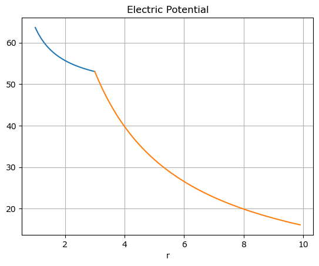
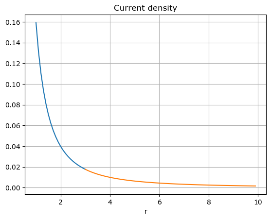
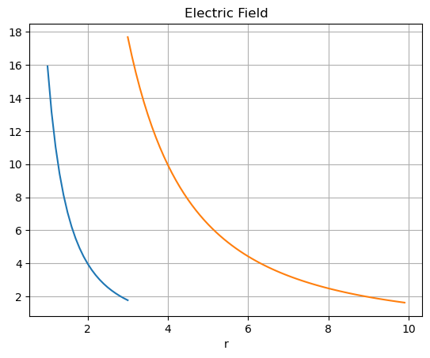

Show the code
from sympy import *
import numpy as npfrom sympy import *
import numpy as npWe consider a uniform halfspace with resistivity \(\rho_2\). There is a point source \(I\) located at the origin. The semi-sphere of radius \(a\) has a resistivity of \(\rho_1\). The semi-sphere is aligned with the \(z\)-axis.
We make the ansatz:
\[ \begin{align} U_1(r) &= \frac{\rho_1 I}{2 \pi r} + A \qquad & r < a \\ U_2(r) &= \frac{\rho_2 B}{2 \pi r} \qquad & r > a \end{align} \]
To solve for the unknowns \(A\) and \(B\) we need the conditions of continuity at the surface of the semisphere, where \(r=a\):
\[ \label{eq:contU} \begin{align} U_1 & = U_2 \\ \frac{1}{\rho_1} \partial_r U_1 & = \frac{1}{\rho_2} \partial_r U_2 \end{align} \]
a, r, rho1, rho2, I = symbols('a r rho_1 rho_2 I', real=True, positive=True)
A, B = symbols("A B", real=True)U_1 = rho1 * I / (2 * pi * r) + A
U_2 = rho2 * B / (2 * pi * r)dU1dr = diff(U_1, r)
dU2dr = diff(U_2, r)ex1 = U_1 - U_2
ex2 = dU1dr / rho1 - dU2dr / rho2sols = solve([ex1.subs(r, a), ex2.subs(r, a)], [A, B])A_ = sols[A].simplify()
B_ = sols[B].simplify()U1 = U_1.subs(A, A_)
U2 = U_2.subs(B, B_)U1\(\displaystyle \frac{I \rho_{1}}{2 \pi r} + \frac{I \left(- \rho_{1} + \rho_{2}\right)}{2 \pi a}\)
U2\(\displaystyle \frac{I \rho_{2}}{2 \pi r}\)
We obtain the following results:
For \(r \le a\) it holds \[ \label{u1} U_1(r) = \frac{I \rho_{1}}{2 \pi r} + \frac{I \left(\rho_{2} - \rho_{1}\right)}{2 \pi a} \] whereas for \(r \ge a\) we find \[ U_2(r) = \frac{I \rho_{2}}{2 \pi r} \]
Let’s check that the potential and the current density are actually continuous at \(r=a\).
We first form the respective expressions for \(r=a\) and check if the results vanish.
D = U1.subs(r,a) - U2.subs(r,a)
D\(\displaystyle \frac{I \rho_{1}}{2 \pi a} - \frac{I \rho_{2}}{2 \pi a} + \frac{I \left(- \rho_{1} + \rho_{2}\right)}{2 \pi a}\)
D.simplify()\(\displaystyle 0\)
This result can be obtained directly by using the expression ex1 for the continuity of the potential:
ex1.subs(r, a).subs(A, A_).subs(B, B_).simplify()\(\displaystyle 0\)
In ex2 we have used the condition for continuity of the radial component of the current densities:
ex2.subs(r, a).subs(B, B_)\(\displaystyle 0\)
Both results indicate that the conditions of continuity are fullfilled.
import matplotlib.pyplot as pltrho1_n = 100.0
rho2_n = 1000.0
a_n = 3.0U1_f = lambdify([rho1, rho2, r, a, I], U1)
U2_f = lambdify([rho1, rho2, r, a, I], U2)R1 = np.arange(1.0, a_n + .01, 0.1)
R2 = np.arange(a_n, 10.0, 0.1)plt.plot(R1, [U1_f(rho1_n, rho2_n, r, a_n, 1.0) for r in R1])
plt.plot(R2, [U2_f(rho1_n, rho2_n, r, a_n, 1.0) for r in R2])
plt.title("Electric Potential")
plt.xlabel("r")
plt.grid(True)
plt.show()
E1_f = lambdify([rho1, rho2, r, a, I], -diff(U1, r))
E2_f = lambdify([rho1, rho2, r, a, I], -diff(U2, r))
j1_f = lambdify([rho1, rho2, r, a, I], -diff(U1, r) / rho1)
j2_f = lambdify([rho1, rho2, r, a, I], -diff(U2, r) / rho2)plt.plot(R1, [j1_f(rho1_n, rho2_n, r, a_n, 1.0) for r in R1])
plt.plot(R2, [j2_f(rho1_n, rho2_n, r, a_n, 1.0) for r in R2])
plt.title("Current density")
plt.xlabel("r")
plt.grid(True)
plt.show()
plt.plot(R1, [E1_f(rho1_n, rho2_n, r, a_n, 1.0) for r in R1])
plt.plot(R2, [E2_f(rho1_n, rho2_n, r, a_n, 1.0) for r in R2])
plt.title("Electric Field")
plt.xlabel("r")
plt.grid(True)
plt.show()
The value of a a is {eval}a_n